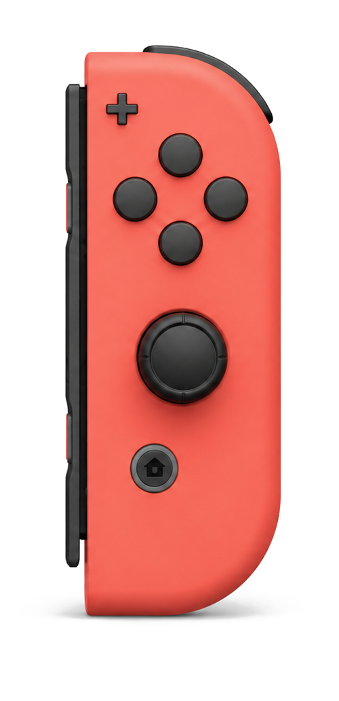

X
进框
光标直接落进输入框。
Joy-Con 语音工作流快捷键工具
用任意一只 Joy-Con 启动语音输入、整理表达、确认发送和切换应用。 少一次伸手找键盘，多留一点注意力给正在说的事。
免费开源 · macOS 13+ · 一只 Joy-Con 即可 · 不录音

任意一只左右手柄都能独立完成整套操作
一键两用按一下和按住可以做不同的事
只发快捷键不录音，也不读取你的语音内容
JoyHarness 是一款 macOS Joy-Con 快捷键映射工具。 它把任意一只 Nintendo Switch Joy-Con 变成语音工作流控制器。
Vibe Coding、写作或和 AI 对话时，语音负责把想法变成文字；但启动听写、确认发送、切换窗口，仍会把手从鼠标带回键盘。
JoyHarness 把这些高频动作放进一只闲置的 Joy-Con。你继续看着屏幕、握着鼠标，另一只手完成整段表达。
一只手柄，一条完整链路
左右手柄功能一致，按握持习惯选。每个键发什么，都能改。
光标直接落进输入框。
发出 fn，交给你的语音输入法。
按住则是换行。
右手不离鼠标。fn 要先在你的语音输入法里绑好。
连接状态和按键配置都集中在一个清晰的界面里。
在代码、文档和对话之间移动时，光标控制与语音操作可以同时进行。

按一下和按住可以分别绑定不同命令，把有限的实体按键变成更完整的工作台。
未完成授权或服务停止时，页面会说明影响并给出唯一的恢复动作。
JoyHarness 适合任何需要长时间在屏幕前说、改、发的场景。
看着代码、握着鼠标，随时说出修改意图，再确认发送给 AI 编程工具。
快速启动整理表达或连续听写，把注意力留在内容，不被快捷键打断。
在浏览器、聊天与办公应用之间切换，用同一套动作完成输入、编辑和发送。
JoyHarness 接收 Joy-Con 的实体按键，再把对应快捷键发送到 Mac。它不录音、不读取语音内容，也不替代 Typeless、豆包或其他语音输入工具。
不是“显示已连接”就结束，而是现场跑通一次语音输入闭环。
用于把 Joy-Con 操作发送为你配置的快捷键。
单左、单右或一对都可以。连接后先确认电量和按键响应状态。
X 进框，ZR 说（再按一下结束），A 发出。
fn —— JoyHarness 只负责把 fn 发出去不要。JoyHarness 可以免费使用。
不需要。左手柄或右手柄都可以独立完成语音输入、发送、编辑和切换应用等核心操作。
不会。JoyHarness 只读取手柄按键并发送快捷键，不录音，也不读取语音内容。语音识别由你选择的输入工具完成。
任何能用系统快捷键启动的都行。JoyHarness 发出的是快捷键本身，接收方是谁由你决定 —— 我们自己用 Typeless 和豆包，默认映射也按它们的习惯配好了，你可以改成任何工具的快捷键。
辅助功能用于把你配置的快捷键发送给当前应用。JoyHarness 通过手柄接口读取 Joy-Con，不监听键盘输入。
暂不支持 Windows。
JoyHarness for macOS
macOS 13+，一只 Joy-Con 就能开始。一只 Joy-Con 就能开始。